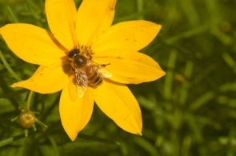

Hickory Oaks Trails
 Hickory Oaks Forest Preserve trails are open 362 days a year. Trails open at sunrise and close at sundown. All along the various trails you will view many native plants and animals. From summer through fall you will see bees and various species of butterflies. As you walk along, you are sure to see one of our many gray squirrels and an occasional deer early in the morning or late in the evening looking for food or water. In the spring, you may be lucky enough to see some baby bunnies. Please do touch or try to capture as pets. Remember, the plant and animals of the forest preserve are protected and should not be removed from the preserve. If you wish, you can purchase plants or seedlings from the gift shop.